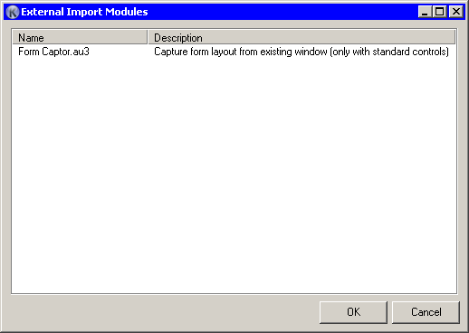

fields_min_koda_ver_1.7.0.0 fields_help_id_0

This dialog is basically nice interface for converters, that put output to stdout. This can be Autoit script (in this case Koda take interpreter path from settings), or *.exe files written in other languages. Output format is documented in Extras\Import\readme.txt.
By default in import folder is example converter Form Captor.au3, that can capture form layout from other windows (that based on standard controls).